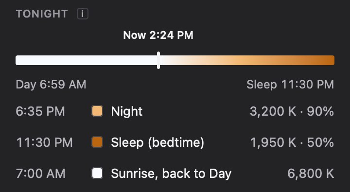

Afterglow
Afterglow warms your Mac's screens after sunset and cools them back at sunrise, on every display, on a schedule you set.
Download for MacFree. For Apple Silicon Macs (M1 or later) on macOS 14 Sonoma or later. It updates itself.

Why it matters
Your screens are often the brightest light you look at after dark. At 11pm they still look like noon unless something changes them.
Afterglow makes that change for you. It warms and dims your screens as the evening goes on, then brings them back to daylight in the morning, without you touching anything.
Who it's for
Anyone who works or reads on a Mac after dark, especially with an external monitor or two. macOS Night Shift uses one setting for every screen and can't dim. Afterglow goes down to a candle-warm 1200K, dims as well as warms, and gives each screen its own settings.
What it does

Follows the sun where you are
Afterglow knows when the sun sets in your city and fades gradually from Day to Evening, Night and Sleep. You always see what's coming tonight.

Profiles you can tune
Each profile has its own color temperature and brightness, from 6800K daylight down to 1200K, with a live preview as you adjust.

Every screen, its own way
Your laptop and your monitor rarely need the same setting. Give each screen its own profile, or apply one to all of them.
Plus optional eye breaks, dithering control and other display health tools, and one click to pause or wind down to sleep from the menu bar.
Works on
Privacy
Afterglow runs on your Mac. Your location, schedules, profiles, settings and activity log stay on your Mac. Afterglow has no account, no analytics and no advertising.
Afterglow connects to the internet for two things only.
Update checks
Once a day Afterglow downloads a small list of available versions from nicholasurban.github.io. Afterglow asks before installing anything. GitHub, which hosts that list and the downloads, sees the request the way any website sees a visitor (an IP address and a basic app identifier). Turn this off in Settings, General, "Check for updates automatically".
Crash reports
Crash reports are on by default and you can turn them off on the Allow access setup step or in Settings, General, "Share crash reports". When on, Afterglow sends a report to Outliyr's own error server (glitchtip.outliyr.com) when Afterglow crashes, hangs, or hits one of its fixed error codes. A report contains only:
- Mac model and chip type
- macOS version
- Afterglow version and build
- How many built-in and external displays are connected
- Whether the display supports dithering control and whether Afterglow's private display controls are available
- A fixed error code (for example
failure.gamma_write_failed) or, after a crash, the stack trace (which functions were running)
A report never contains your location or city, the names of apps or windows, websites or URLs, your settings or profiles, file paths, your name or your Mac's name. Afterglow filters every report against this list on your Mac before it is sent.
Each error code is sent at most once per launch, and display compatibility reports at most once per Afterglow version.